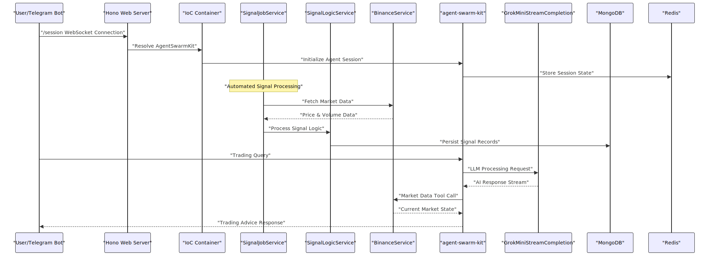

Overview
The agent-swarm-kit is a TypeScript framework for building orchestrated, multi-agent AI systems that can seamlessly coordinate between different AI models and external tools. This document provides an architectural overview of the framework's core components, service layers, and integration patterns.
The framework enables developers to create swarms of AI agents that can navigate between each other, share conversation history, execute tools, and maintain persistent state across sessions. For specific implementation details of individual components, see Core Components. For usage patterns and examples, see Usage Patterns and Examples.
Framework Purpose and Architecture
The agent-swarm-kit framework addresses the complexity of building multi-agent AI systems by providing a modular, service-oriented architecture that separates concerns into distinct layers. The system supports multiple AI providers (OpenAI, Ollama, Claude, etc.) within a single conversation flow, automatic session management, and sophisticated tool execution capabilities.
System Architecture Overview

Core Component Relationships
The framework's core components follow a hierarchical relationship where sessions manage swarms, swarms orchestrate agents, and agents execute tools and interact with AI completions.
Component Interaction Flow

Service Architecture Pattern
The framework implements a layered service architecture with three primary service types: Public Services (external API), Connection Services (instance management), and Schema Services (configuration management). This pattern provides clear separation of concerns and enables dependency injection throughout the system.
| Service Layer | Responsibility | Key Classes | File Locations |
|---|---|---|---|
| Public Services | External API, context scoping | AgentPublicService, SessionPublicService |
src/lib/services/public/ |
| Connection Services | Instance management, memoization | AgentConnectionService, SessionConnectionService |
src/lib/services/connection/ |
| Schema Services | Configuration, validation | AgentSchemaService, ToolSchemaService |
src/lib/services/schema/ |
| Validation Services | Dependency checking, integrity | SessionValidationService, SwarmValidationService |
src/lib/services/validation/ |
The service layer uses dependency injection via the di-scoped library, with service registration managed through TYPES constants and accessed via the inject() function pattern seen throughout the codebase.
Data Flow and State Management
The framework manages multiple types of state and data persistence:
- Session State: Managed by
ClientSessionwith automatic cleanup and validation - Agent History: Handled by
ClientHistorywith message filtering and rotation - Storage: Embedding-based search via
Storageclasses with similarity scoring - Shared State: Cross-agent state via
SharedStateandSharedStorageclasses - Persistence: JSON file-based storage through
PersistBaseutilities
Message Flow Through History System

The history system maintains a rotating buffer of messages (configurable via CC_KEEP_MESSAGES in GLOBAL_CONFIG) and applies agent-specific filtering through CC_AGENT_HISTORY_FILTER to ensure each agent only sees relevant tool calls and system messages.
Integration Patterns
The framework supports multiple integration patterns for external systems:
Tool Integration: Tools are defined via IAgentTool interface and registered through addTool(). Tools can be stateful, validate parameters, and include lifecycle callbacks (onBeforeCall, onAfterCall, onCallError).
AI Provider Integration: Multiple completion providers are supported through the Adapter class pattern, with implementations for OpenAI, Ollama, Cohere, and custom providers via ICompletionSchema.
External Protocol Support: Model Context Protocol (MCP) integration allows agents to call external tools and services, with automatic tool discovery and execution through MCPConnectionService.
Event System: The BusService provides event-driven communication between components, with typed events (IBusEvent) and support for custom event handlers via listenEvent() functions.